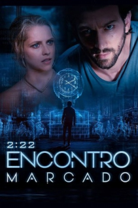

2:22 - Encontro Marcado (2017)



Avaliação (TMDb):


5.9/10 (1.1K votos)
Avaliação (Usuário):
Outro Título:2:22
País:Australia, 99 minutos
Idiomas falados:Inglês, Português
Gênero(s):Drama, Suspense, Romance, Sci-Fi, Mistério
Diretor(s):Paul Currie
Codec:MPEG-2 (DVD)
Número: 3553
Sinopse:
A vida de um homem fica completamente descarrilhada quando um padrão sinistro de eventos se repete exatamente da mesma maneira todos os dias, terminando precisamente às 2:22 da tarde.
Elenco:
Michiel Huisman, Teresa Palmer, Sam Reid, John Waters, Richard Davies, Maeve Dermody, Kerry Armstrong, Simone Kessell, Remy Hii, Jessica Clarke
Tipo de mídia: DVD5,
Legendas: Português
Alugado: Não
Tela: Anamorphic Widescreen